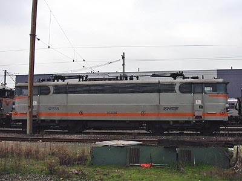

La BB 25100 version 
Jean Pierre Gléonec a réalisé un pack de BB 25100-25150 pour MSTS
Ferrovia - 11 Février 2008
BB 25100
Les BB 25100 furent les premières machines Jacquemin bicourant dérivant de la BB 20005. Limitées à 130 km/h, elles étaient destinées à assurer le transport de marchandises entre les régions industrielles du Bénélux, du Nord et de la Lorraine et Dijon, important noeud électrifié en 1,5 kV. La SNCF les réceptionna de Juillet 1964 à Juin 1965. Après quoi les usines du Creusot enchainèrent la production des BB 25200. Alors que les dix premiers exemplaires étaient livrés, l'électrification de la ligne Chalindrey-Dijon n'était pas achevée. Ils furent donc envoyés à Dôle et assurèrent des trains internationaux entre Paris et Vallorbe sans relais.
Après ce bref épisode, les BB 25100 furent mutées à Chalindrey où les livraisons ont continué. Leur service Nord-Sud ne connaitra alors que peu de variations au cours de leur carrière. Avec l'explosion du trafic marchandises, des Trains-Auto-Couchettes et des trains d'agence entre l'Europe du Nord et la Méditerranée, les 25 BB 25100 étaient devenues insuffisamment nombreuses. La SNCF commanda donc 20 locomotives BB 25150 quasi-identiques dès 1965.
Elles ont sillonnées le Nord-Est et descendaient jusqu'Ambérieu. L'arrivée des machines modernes et surtout des BB 27000 les a poussé à la retraite. L'amortissement débuté en 2002 s'est intensifié en 2005 et seules 9 machines restaient à l'inventaire début 2006. Les deux dernières furent radiées en 2007 peu après leur mutation à Rennes et revendues à l'opérateur privé Roumain GFR.
Les livrées
La livrée d'origine était identique à celle des BB 9200 et BB 16000 avec des fanaux rouges d'origine.
Le béton a touché la série avec des variations sur les teintes, la forme des moustaches ou des marquages.
La livrée Multiservice ne fut appliquée que sur la BB 25120
La livrée Fret fut appliquée sur les 25109, 14, 21 et 22.
Quelques données techniques
Constructeur : MTE Jeumont Schneider - Société des Forges et Ateliers du Creusot.
Tension d'alimentation : 1,5 kV continu, monophasé 25 kV 50 Hz
Chaîne de traction 1,5 kV : Banc rhéostatique commandé par graduateur
Chaîne de traction 25 kV : Graduateur HT, redresseurs silicium.
Motorisation : 2 moteurs par bogie
Puissance totale : 25 kV : 4130 kW ; 1,5 kV : 3400 kW
Longueur : 16,2 m
Masse : 84t
Pantographes : AM 18 B et AM 184
Vitesse maximum autorisée : 130 km/h
Pour plus d'info :
Fiche technique des BB 25100 de Florent Brisou
L'inventaire des BB 25100 sur Trains du Sud-Ouest

La BB 25118 à Villeneuve St Georges (08/12/2002)
La BB 25100 version 
Jean Pierre Gléonec a réalisé un pack de BB 25100-25150 pour MSTS